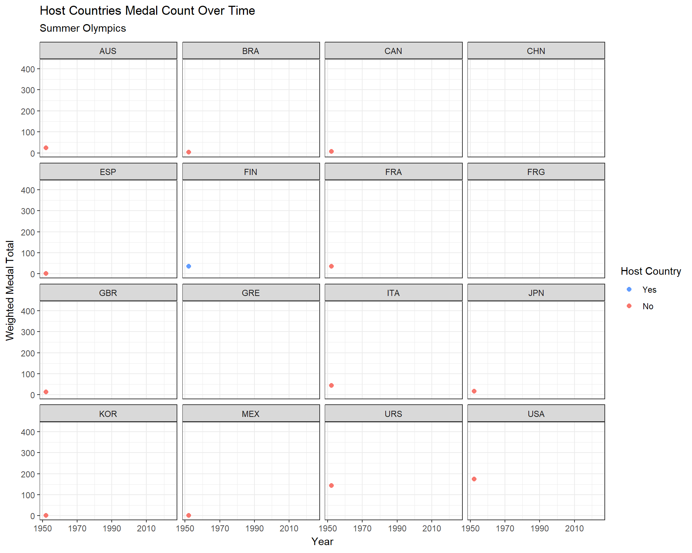

Assessing the ‘Host Country Advantage’ in the Olympics
Author
Elissa Leung
Introduction
The Olympic Games, held every two years with alternating Summer and Winter events, unite countries for exciting athletic competition. A host country is selected years in advance by the International Olympic Committee1, and while hosting requires significant investment, the benefits–such as economic growth, tourism, and global visibility–typically outweigh the costs. Hosting has also been linked to greater Olympic success, with countries typically performing better than in non-host years.
This is known as the “host country advantage,” where nations typically outperform previous years, possibly due to increased resources, a larger team, and home-field advantage. Understanding this advantage is crucial to evaluating a country’s Olympic performance. So, we’ll explore: Does being the host country impact a country’s performance at the Olympics?
Data Sources
Helpful Packages
Code
# Install necessary packagesif(!require("dplyr")) install.packages("dplyr")if(!require("tidyverse")) install.packages("tidyverse")if(!require("DT")) install.packages("DT")if(!require("ggplot2")) install.packages("ggplot2")if(!require("RColorBrewer")) install.packages("RColorBrewer")if(!require("stringr")) install.packages("stringr")if(!require("patchwork")) install.packages("patchwork")if(!require("gganimate")) install.packages("gganimate")if(!require("ggcorrplot")) install.packages("ggcorrplot")if(!require("leaflet")) install.packages("leaflet")if(!require("gridExtra")) install.packages("gridExtra")if(!require("tidymodels")) install.packages("tidymodels")if(!require("readr")) install.packages("readr")if(!require("vip")) install.packages("vip")if(!require("fable")) install.packages("fable")if(!require("tsibble")) install.packages("tsibble")if(!require("feasts")) install.packages("feasts")if(!require("urca")) install.packages("urca")# Load packages into Rlibrary(dplyr)library(tidyverse)library(DT)library(ggplot2)library(RColorBrewer) # different color palette optionslibrary(stringr)library(patchwork) # inset plotslibrary(gganimate) # animated plotslibrary(ggcorrplot) # correlation matriceslibrary(leaflet)library(gridExtra)library(tidymodels) # statistical modelinglibrary(readr) # for importing datalibrary(vip) # for variable importance plotslibrary(fable) # time series analysislibrary(tsibble)library(feasts)library(urca)
126 Years of Olympic Data (1896-2022)
We will be using a public data source from Kaggle, the 126 Years of Historical Olympic Dataset from Muhammad Ehsan. This collection of datasets contains extensive and unbiased Olympic data from the 1892 Olympic Games in Athens, Greece until the 2022 Winter Olympic Games in Beijing, China. We will only need the following data sets:
Olympic Country Profiles: Country National Olympic Committee (NOC) codes.
Olympic Games Summary: Summary of Olympic Games (e.g. host country, year).
Olympic Medal Tally History: Historical record of country Olympic medal distributions (gold, silver, bronze).
Code
# Historical Olympic "Master" Data (1896-2022)olympic_athlete_event_details <-read_csv("Olympic_Athlete_Event_Details.csv") # used for total athletesolympic_country_profiles <-read_csv("Olympic_Country_Profiles.csv") # used for naming conventionsolympic_games_summary <-read_csv("Olympic_Games_Summary.csv") # used to get host nation informationolympic_medal_tally_history <-read_csv("Olympic_Medal_Tally_History.csv") # used to get medal total information
Paris 2024 Summer Olympics Data
We would also like to include the 2024 Summer Olympic Games hosted in Paris, France, by using another Kaggle dataset, the Paris 2024 Olympic Summer Games compiled by Petro. This collection of Paris Olympics data is also an unbiased and extensive overview of the most recent Olympics. We will only need the following data sets:
Athletes: 2024 Paris Summer Olympics athlete information (e.g. name, country, sport).
Medals Total: Complete country medal counts for 2024 Paris Summer Olympics.
Code
# 2024 Paris Summer Olympics Dataparis_medals_total_original <-read_csv("medals_total.csv") # used for medal total informationparis_athletes_original <-read_csv("athletes.csv") # used for total athletes information
Data Cleaning
Before proceeding with analysis, to prevent any future difficulties we will need to bind our historical datasets with our Paris datasets.
Below we bind the olympic_medal_tally_history data table with the paris_medals_total data, adjusting country names and column names accordingly.
Code
# Paris Data - figure out what data I actually need from here# Medals Tally Dataparis_edition <- olympic_games_summary |>filter(year ==2024) |>pull(edition)paris_edition_id <- olympic_games_summary |>filter(year ==2024) |>pull(edition_id)paris_year <-2024# Columns: country_code, country, country_long, Gold Medal, Silver Medal, Bronze Medal, Total# Need to adjust the country names based on the original data naming convention, will use the country profiles data to do so# Need to add other variables missing: edition, edition_id, and year# Need to rename all the columns based on the variables we have in olympic_medal_tally_history data frameparis_medals_total <- paris_medals_total_original |>left_join(olympic_country_profiles, join_by("country_code"=="noc")) |>rename(country_name = country.y) |>select(c("country_name", "country_code", "Gold Medal", "Silver Medal", "Bronze Medal", "Total")) |>mutate(edition = paris_edition,edition_id = paris_edition_id,year = paris_year) |>rename(country ="country_name",country_noc = country_code,gold ="Gold Medal",silver ="Silver Medal",bronze ="Bronze Medal",total ="Total")# need to add this data to our olympic_medal_tally_history dataolympic_medal_tally_history <-rbind(olympic_medal_tally_history, paris_medals_total)
Next, we bind olympic_athlete_event_details with the paris_athletes_original data. I first verified that the athlete IDs were unique in each table. The tables stored data differently: olympic_athlete_event_details used a “pivot longer” format, while paris_athletes_original stored events as a string list. I used str_split_fixed(), str_length(), and substr() from stringr, along with pivot_longer(), to adjust the records.
Code
# Paris Olympic Athlete Data# Issues with last 3 records "discipline" column -- will manually correctparis_athletes_original <- paris_athletes_original |>mutate(disciplines =case_when( code ==1972077~"['Athletics']", code ==1899865~"['Equestrian']", code ==1924402~"['Athletics']",.default = disciplines )) |>mutate(events =case_when( code ==1972077~"['4 x 400m Relay Mixed']", code ==1899865~"['Jumping Team']", code ==1924402~"['Men's 4 x 400m Relay']",.default = events ))# Check if there's overlap in the Athlete IDs -- otherwise will be very hard to bind dataframes# intersect(olympic_athlete_event_details$athlete_id, paris_athletes_original$code) # Returns 0: no intersect, so it's safe to bind the data frames# Next need to figure out how the olympic_athlete_event_details data frame is organized# Columns: edition, edition_id, country_noc, sport, event, result_id, athlete, athlete_id, pos, medal, isTeamSport, year# Really only need to fill the country_noc, sport, event, athlete, athlete_id columns --> as those are the only ones we will be using laterparis_athletes <- paris_athletes_original |>select(c("country_code", "disciplines", "events", "name", "code")) |>mutate(edition = paris_edition,edition_id = paris_edition_id,sports_list =substr(disciplines, 2, str_length(disciplines) -1),events_list =substr(events, 2, str_length(events) -1))# Splitting the events columnparis_athletes[c("sport_1", "sport_2")] <-str_split_fixed(paris_athletes$sports_list, ", ", 2)paris_athletes[c("event_1", "event_2", "event_3", "event_4", "event_5", "event_6", "event_7", "event_8")] <-str_split_fixed(paris_athletes$events_list, ", ", 8)paris_athletes <- paris_athletes |>pivot_longer(!c("edition", "edition_id", "country_code", "disciplines", "events", "events_list", "name", "code", "sports_list", "sport_1", "sport_2"), names_to ="event_number", values_to ="event_original") |>filter(event_original !="") |>select(-c("events", "events_list", "event_number")) |>pivot_longer(!c("edition", "edition_id", "country_code", "disciplines", "name", "code", "sports_list", "event_original"), names_to ="sport_number", values_to ="sport_original") |>filter(sport_original !="") |>mutate(event =substr(event_original, 2, str_length(event_original) -1),sport =substr(sport_original, 2, str_length(sport_original) -1)) |>select(-c('disciplines', "sports_list", "sport_number", "event_original", "sport_original")) |>mutate(result_id =NA,pos =NA,medal =NA,isTeamSport =NA) |>rename(athlete_id ="code",athlete ="name",country_noc = country_code)olympic_athlete_event_details <-rbind(olympic_athlete_event_details, paris_athletes)
To avoid possible inaccuracies with older data, we will focus on the Olympics from 1950 onwards. We’ll also create a season column to differentiate between Summer and Winter Olympics.
Code
# For remainder of analysis we will only focus on Olympics from 1950s onwardsolympic_medal_tally_history <- olympic_medal_tally_history |>filter(year >=1950) |>mutate(season =case_when(str_detect(edition, "Summer") ~"summer",str_detect(edition, "Winter") ~"winter" ))
Code
# Include country names into Olympic Games Summary table using the country profile data tableolympic_games_summary <-left_join(olympic_games_summary, olympic_country_profiles, join_by("country_noc"=="noc"))# For remainder of analysis we will only focus on Olympics from 1950s onwardsolympic_games_summary <- olympic_games_summary |>filter(year >=1950, year <=2024) |>select(-c(edition_url, country_flag_url, isHeld))# adds column differentiating type of Olympicsolympic_games_summary <- olympic_games_summary |>mutate(season =case_when(str_detect(edition, "Summer") ~"summer",str_detect(edition, "Winter") ~"winter" ))winter_olympic_games_summary <- olympic_games_summary |>filter(season =="winter")summer_olympic_games_summary <- olympic_games_summary |>filter(season =="summer")
As a unique aspect to our analysis, we will use a weighted total medal count metric, where the better the medal, the more weight it carries in the final total.
Next, we’ll proceed with preliminary host country analysis of our Olympic data sets.
Code
# want to include weighted medal count (gold: 3, silver: 2, bronze: 1) and categorize data based on Olympic seasonolympic_medal_tally_history <- olympic_medal_tally_history |>mutate(weighted_total = (gold*3) + (silver*2) + (bronze*1))olympic_medal_tally_history_summer <- olympic_medal_tally_history |>filter(season =="summer")olympic_medal_tally_history_winter <- olympic_medal_tally_history |>filter(season =="winter")
Host Analysis
First, I would like to take a look at which countries have had the opportunity to host the Olympics since 1950.
To build an leaflet interactive map of Olympic host cities, I used latitude and longitude coordinates from the Facts about Olympic cities dataset by Eric Narro.
Code
# Latitude and Longitude for each host citycity_coord <-read_csv("olympic_cities.csv") |>select(c("Olympic_year", "Olympic_season", "ISO_code_mapping", "Latitude", "Longitude"))# Joining tables to include Olympic host information with location dataolympic_games_summary_coord <-inner_join(olympic_games_summary, city_coord, join_by("year"=="Olympic_year", "season"=="Olympic_season")) |>arrange(year) |>filter(!(country_noc =="AUS"&`ISO_code_mapping`=="SWE")) |>select(-c("ISO_code_mapping"))# Summarizing host country information for each Olympic Gameolympic_games_summary_city <- olympic_games_summary_coord |>mutate(season =case_when( city =="Beijing"~"both",.default = season )) |>group_by(city, country, season, `Latitude`, `Longitude`) |>summarize(total_hosted =n(),host_years =as.character(list(edition))) |>ungroup() |>drop_na() |>mutate(popup_info =case_when(substr(host_years, 1, 1) =="c"~paste(city, ", ", country, " hosted the ", "<br/>", substr(host_years, 4, 23), " and <br/> the ", substr(host_years, 28, 47)),.default =paste(city, ", ", country, " hosted the ", host_years)))
The interactive map below shows the cities that have hosted the Olympics. By clicking each of the points, we’ll be able to see the year(s) each city hosted.
From this map, we can observe that Innsbruck, Austria, Tokyo, Japan and Beijing, China are the only three cities to have hosted the Olympics twice (within the 1950-Present period). Innsbruck has hosted the Winter Olympics twice, while Tokyo has hosted the Summer Olympics twice. Beijing is the only city to have hosted the Winter Olympics and Summer Olympics.
Shifting our focus from host cities to host countries, below is an overview of the distribution of Olympic Games hosted by countries for the Summer and Winter Olympics. Since 1950, we find that Australia, Japan, and the United States have hosted the most Summer Olympics with two each.
summer_olympic_games_summary_host |>ggplot(aes(x =reorder(country_noc, -total_hosted), y = total_hosted)) +geom_bar(stat ="identity") +labs(title ="Total Summer Olympics Hosted per Country (1950-2024)",x ="Country",y ="Host Count") +theme_bw()
For the Winter Olympics, we also find the United States taking the top spot for most Winter Olympic Games hosted since 1950, with three Winter Games hosted 1960, 1980, 2002.
Code
# Table showing the number of Olympics hosted per countrywinter_olympic_games_summary_host <- winter_olympic_games_summary |>group_by(country, country_noc) |>summarize(total_hosted =n()) |>arrange(desc(total_hosted))winter_hosts <- winter_olympic_games_summary_host |>pull(country)DT::datatable(setNames(winter_olympic_games_summary_host, c("Country", "Country Code", "Total Olympics Hosted")), caption ="Table 2: Winter Olympic Host Totals",rownames =FALSE,options =list(pageLength =10))
Code
winter_olympic_games_summary_host |>ggplot(aes(x =reorder(country_noc, -total_hosted), y = total_hosted)) +geom_bar(stat ="identity") +labs(title ="Total Winter Olympics Hosted per Country (1950-2024)",x ="Country",y ="Host Count") +theme_bw()
Being that the Winter Games requires host countries to have a particular climate compatible with the events, it makes sense that only 11 countries have hosted the games, with 7 nations hosting on multiple occasions, compared to 16 countries hosting for the summer, with only 3 countries hosting more than once since 1950.
Medal Progression for Hosts
Next, we’ll look at the medal progression for host countries over time, to determine any anomalies or patterns during host years.
Summer Olympics
From a preliminary observation of each country’s medal progressions, the weighted medal count for each country during the host year has mostly increased from the weighted medal count from the Olympic Games prior.
Code
# Plotting each summer hosts' medal progressionsummer_hosts_df <- summer_olympic_games_summary |>select(c('country_noc', 'year')) |>mutate(host_country = country_noc,host_year = year) |>select(c('host_country', 'host_year')) |>group_by(host_country) |>summarize(host_years =list(host_year))summer_hosts_df_countries <- summer_hosts_df |>pull(host_country) |>unique()medal_count_summer_hosts <- olympic_medal_tally_history_summer |>filter(country_noc %in% summer_hosts_df_countries) |>left_join(summer_hosts_df, join_by("country_noc"=="host_country")) |>arrange(country_noc, year) |>group_by(country_noc) |>mutate(host = (year %in% host_years[[1]]))# Information about year of olympics, country, and whether they were the host that yearsummer_host_country_cols <- medal_count_summer_hosts |>select(c('year', 'country', 'country_noc', 'host'))summer_host_animate <- medal_count_summer_hosts |>ggplot(aes(x = year, y = weighted_total)) +geom_point(aes(group =seq_along(year), color = host), size =2) +geom_line(aes(group =1)) +facet_wrap(~country_noc) +theme_bw() +labs(title ="Host Countries Medal Count Over Time",subtitle ="Summer Olympics",x ="Year",y ="Weighted Medal Total") +scale_color_manual(name ="Host Country",values =c("FALSE"="#F8766D", "TRUE"="#619CFF"),labels =c("No", "Yes")) +guides(color =guide_legend(reverse =TRUE)) +transition_reveal(year)animate(summer_host_animate, duration =20, end_pause =30)

This is especially obvious in the 1984 Olympic Games for the US, where the country experienced a significant increase of 103.55% in their weighted medal total as compared to the previous year (from 197 to 497).
Winter Olympics
For the Winter Olympics, the host country usually increased their weighted medal count during host years. One exception to this pattern was in 1988, Canada hosted and earned a weighted total of 7 as compared to their previous showing of 9, both quite low. Otherwise, each country has shown an increase in their weighted totals during host years. One massive increase was for the US in 2000 when they increased their weighted medal count by 139.29%.
Code
# Plotting each winter hosts' medal progressionwinter_hosts_df <- winter_olympic_games_summary |>select(c('country_noc', 'year')) |>mutate(host_country = country_noc,host_year = year) |>select(c('host_country', 'host_year')) |>group_by(host_country) |>summarize(host_years =list(host_year))winter_hosts_df_countries <- winter_hosts_df |>pull(host_country) |>unique()medal_count_winter_hosts <- olympic_medal_tally_history_winter |>filter(country_noc %in% winter_hosts_df_countries) |>left_join(winter_hosts_df, join_by("country_noc"=="host_country")) |>arrange(country_noc, year) |>group_by(country_noc) |>mutate(host = (year %in% host_years[[1]]))# Information about year of olympics, country, and whether they were the host that yearwinter_host_country_cols <- medal_count_winter_hosts |>select(c('year', 'country', 'country_noc', 'host'))winter_host_animate <- medal_count_winter_hosts |>ggplot(aes(x = year, y = weighted_total)) +geom_point(aes(group =seq_along(year), color = host), size =2) +geom_line(aes(group =1)) +facet_wrap(~country_noc) +theme_bw() +labs(title ="Host Countries Medal Count Over Time",subtitle ="Winter Olympics",x ="Year",y ="Weighted Medal Total") +scale_color_manual(name ="Host Country",values =c("FALSE"="#F8766D", "TRUE"="#619CFF"),labels =c("No", "Yes")) +guides(color =guide_legend(reverse =TRUE)) +transition_reveal(year)animate(winter_host_animate, duration =20, end_pause =30)
Overall, host countries typically experience more success in their host years as compared to Olympics immediately prior.
Below is a quick look at a factor that may contribute to host country success, athlete participation.
Athlete Participation
Typically, host countries have additional athletes representing their country as compared to non-host years.2 This is due to the lower qualifications required for host country athletes as they are guaranteed a spot for each team sport.
Summer Olympics
There is a general increasing trend for the amount of athletes each of these countries have sent over time. Additionally, it seems that in every host year, countries are sending more athletes compared to the years before, verifying the pattern of host countries having more athlete representation during host years.
Furthermore, from the pie charts below, we find that the athletes in every host year exceed that of the Olympics immediately prior for each host country. We also can observe that in 89% of cases, these host year athlete counts also exceed that of the following Olympics.
Code
# Want to check if during host years the number of athletes exceed the totals from immediately before and after the host year# Check if the athlete participation exceeds the prior Olympicssummer_less_athletes_before <- summer_host_country_cols |>left_join(summer_total_athletes_per_country, join_by("year"=="year", "country_noc"=="country_noc")) |>arrange(country_noc, year) |>mutate(host_more =case_when( host =="TRUE"~ (total_athletes >lag(total_athletes)),.default =NA )) |>filter(!is.na(host_more)) |>select(c("year", "country", "country_noc", "host_more")) |>arrange(year)# Pie chart - athlete participation before vs during host yearsummer_before_host <- summer_less_athletes_before |>group_by(host_more) |>summarize(count =n()) |>ungroup() |>mutate(total_olympics =sum(count),percent =round((count / total_olympics) *100, 2),percent_labels =paste0(percent, "%")) |>ggplot(aes(x="", y = percent, fill =factor(host_more, levels =c("TRUE", "FALSE")))) +geom_bar(stat ="identity", width =1) +geom_text(aes(label = percent_labels),position =position_stack(vjust =0.5)) +coord_polar("y", start =0) +theme_void() +theme(legend.position ="bottom",plot.subtitle =element_text(hjust =0.5)) +labs(subtitle ="Before vs During Host Years") +scale_fill_manual(name ="Greater",values =c("TRUE"="skyblue2", "FALSE"="indianred2"),labels =c("Host Year", "Previous Year"))# Check if the athlete participation exceeds the subsequent Olympics as wellsummer_less_athletes_after <- summer_host_country_cols |>left_join(summer_total_athletes_per_country, join_by("year"=="year", "country_noc"=="country_noc")) |>arrange(country_noc, year) |>mutate(host_more =case_when( host =="TRUE"~ (total_athletes >lead(total_athletes)),.default =NA )) |>filter(!is.na(host_more)) |>select(c("year", "country", "country_noc", "host_more")) |>arrange(year)# Pie chart - athlete participation after vs during host yearsummer_after_host <- summer_less_athletes_after |>group_by(host_more) |>summarize(count =n()) |>ungroup() |>mutate(total_olympics =sum(count),percent =round((count / total_olympics) *100, 2),percent_labels =paste0(percent, "%")) |>ggplot(aes(x="", y = percent, fill =factor(host_more, levels =c("TRUE", "FALSE")))) +geom_bar(stat ="identity", width =1) +geom_text(aes(label = percent_labels),position =position_stack(vjust =0.5)) +coord_polar("y", start =0) +theme_void() +theme(legend.position ="bottom",plot.subtitle =element_text(hjust =0.5)) +labs(subtitle ="During vs After Host Years") +scale_fill_manual(name ="Greater",values =c("TRUE"="skyblue2", "FALSE"="indianred2"),labels =c("Host Year", "Following Year"))grid.arrange(summer_before_host, summer_after_host, ncol =2, top ="Comparison of Athletes Sent to Summer Olympics During \nHost Years vs Immediately Before and After")
Winter Olympics
Contrary to the summer host countries, there is a little less of an obvious extreme athlete participation for host years.
More specifically, in the pie charts below, we find that 88% of the time the host year athlete participation exceeded that of the previous year, while only 76% of the host year athlete counts exceeded that of the following year.
Code
# Winter Olympics: Check if during host years the number of athletes exceed the totals from immediately before and after the host year# Check if the athlete participation exceeds the prior Winter Olympicswinter_less_athletes_before <- winter_host_country_cols |>left_join(winter_total_athletes_per_country, join_by("year"=="year", "country_noc"=="country_noc")) |>arrange(country_noc, year) |>mutate(host_more =case_when( host =="TRUE"~ (total_athletes >lag(total_athletes)),.default =NA )) |>filter(!is.na(host_more)) |>select(c("year", "country", "country_noc", "host_more")) |>arrange(year)# Pie chart - athlete participation before vs during host yearwinter_before_host <- winter_less_athletes_before |>group_by(host_more) |>summarize(count =n()) |>ungroup() |>mutate(total_olympics =sum(count),percent =round((count / total_olympics) *100, 2),percent_labels =paste0(percent, "%")) |>ggplot(aes(x="", y = percent, fill =factor(host_more, levels =c("TRUE", "FALSE")))) +geom_bar(stat ="identity", width =1) +geom_text(aes(label = percent_labels),position =position_stack(vjust =0.5)) +coord_polar("y", start =0) +theme_void() +theme(legend.position ="bottom",plot.subtitle =element_text(hjust =0.5)) +labs(subtitle ="Before vs During Host Years") +scale_fill_manual(name ="Greater",values =c("TRUE"="skyblue2", "FALSE"="indianred2"),labels =c("Host Year", "Previous Year"))# Check if the athlete participation exceeds the subsequent Olympics as wellwinter_less_athletes_after <- winter_host_country_cols |>left_join(winter_total_athletes_per_country, join_by("year"=="year", "country_noc"=="country_noc")) |>arrange(country_noc, year) |>mutate(host_more =case_when( host =="TRUE"~ (total_athletes >lead(total_athletes)),.default =NA )) |>filter(!is.na(host_more)) |>select(c("year", "country", "country_noc", "host_more")) |>arrange(year)# Pie chart - athlete participation after vs during host yearwinter_after_host <- winter_less_athletes_after |>group_by(host_more) |>summarize(count =n()) |>ungroup() |>mutate(total_olympics =sum(count),percent =round((count / total_olympics) *100, 2),percent_labels =paste0(percent, "%")) |>ggplot(aes(x="", y = percent, fill =factor(host_more, levels =c("TRUE", "FALSE")))) +geom_bar(stat ="identity", width =1) +geom_text(aes(label = percent_labels),position =position_stack(vjust =0.5)) +coord_polar("y", start =0) +theme_void() +theme(legend.position ="bottom",plot.subtitle =element_text(hjust =0.5)) +labs(subtitle ="During vs After Host Years") +scale_fill_manual(name ="Greater",values =c("TRUE"="skyblue2", "FALSE"="indianred2"),labels =c("Host Year", "Following Year"))grid.arrange(winter_before_host, winter_after_host, ncol =2, top ="Comparison of Athletes Sent to Winter Olympics During \nHost Years vs Immediately Before and After")
So while a jump in athlete participation was more obvious for hosts of the Summer Olympics, the pattern is less evident for host countries in the Winter Olympics. Regardless, the increase in athlete participation from host countries as compared to other Olympic years is likely due to the lower barrier of entry for host nation athletes. While this doesn’t guarantee medals, it increases the likelihood of host countries earning medals as compared to other years.
Let’s look at the correlation between total athletes competing versus the weighted total medal counts for the Olympics.
Correlation: Athlete Participation vs Weighted Medal Counts
From these visuals, we find that athlete participation and weighted medal total have a strong, positive correlation (r=0.74). The correlation between the variables highlights the potential importance of athlete participation in driving overall medal success.
Code
# All metrics in one data frame to calculate correlations between each metric# Summer Olympics: total athletes sent and total medals won for each country each yearsummer_total_athletes_medals <-inner_join(summer_total_athletes_per_country, olympic_medal_tally_history_summer, by =c("year", "country_noc")) |>select(c("year", "country_noc", "season", "total_athletes", "weighted_total"))# Winter Olympics: total athletes sent and total medals won for each country each yearwinter_total_athletes_medals <-inner_join(winter_total_athletes_per_country, olympic_medal_tally_history_winter, by =c("year", "country_noc")) |>select(c("year", "country_noc", "season", "total_athletes", "weighted_total"))# Data frame combining above two data frames into one (Summer and Winter)total_athletes_medals <-rbind(summer_total_athletes_medals, winter_total_athletes_medals)# Scatterplot: Athlete Participation vs Weighted Medal Countstotal_athletes_medals |>ggplot(aes(x = total_athletes, y = weighted_total)) +geom_point() +geom_smooth() +labs(title ="Relationship between Total Athletes Sent and Weighted Total Medal Counts",x ="Total Athletes Sent to Olympics",y ="Weighted Total Medal Count") +theme_bw()
Code
# Correlation Matrix: Athletes and Weighted Total Medal Countcorr_matrix <- total_athletes_medals |>select(c("total_athletes", "weighted_total")) |>rename(`Total Athletes`= total_athletes,`Weighted Total Medal Count`= weighted_total) |>cor() |>round(digits =2)corr_matrix |>ggcorrplot(lab =TRUE)
After a preliminary look at the historical Olympic athlete data, we found that typically host countries send more athletes during their host years.
So far, we have found that typically host countries are performing better during their host years. To more confidently determine if the host country advantage phenomenon exists, we will conduct some statistical modeling below.
Statistical Modeling
We will take several statistical models to evaluate the existence of the host country advantage. These methods allow us to more thoroughly assess whether the observed patterns are statistically significant or just a consequence of chance.
First, we will employ classification models with tidymodels. More specifically, we will use the variables year, country, season, and weighted_medal_count to predict a country’s host status.
Ultimately, the coefficient estimate for the weighted_total variable is 0.01753. Although this is a small value, since it is a positive value, this coefficient indicates that countries have a higher weighted medal count during host years. Despite inputting over 150 variables into our model, the weighted_total variable still remains among the most significant with the smallest p-value of 0.00009. This indicates a convincing correlation between weighted total medal count and host country status not due to chance.
Next, we will employ a random forest model to see if we get similar results for the weighted_total variable.
Random Forest
For our random forest model, we select the “best” model among several based on the area under the receiver-operating characteristic curve (ROC AUC).
Code
set.seed(100)splits <-initial_split(medal_count_with_hosts, strata = host)# Non-Testolympic_other <-training(splits)# Testolympic_test <-testing(splits)set.seed(200)# Validation Splitval_set <-validation_split(olympic_other,strata = host,prop =0.80)# Corescores <- parallel::detectCores()# Random Forest Modelrf_mod <-rand_forest(mtry =tune(), min_n =tune(), trees =1000) |>set_engine("ranger", num.threads = cores) |>set_mode("classification")# Random Forest Recipe (year, season, country, weighted medal counts to predict host status)rf_recipe <-recipe(host ~ ., data = olympic_other)# Random Forest Workflowrf_workflow <-workflow() |>add_model(rf_mod) |>add_recipe(rf_recipe)# Tuning the Random Forest Modelset.seed(300)rf_res <- rf_workflow |>tune_grid(val_set,grid =25,control =control_grid(save_pred =TRUE),metrics =metric_set(roc_auc))# Select the best random forest model (based on roc)rf_best <- rf_res |>select_best(metric ="roc_auc")rf_mtry <- rf_best$mtryrf_min_n <- rf_best$min_n
After fitting the test data on this model, we plot the variable importance scores for each variable in our latest model. The weighted_total variable ranks the highest in our importance plot, with a score of about 34. This indicates that the weighted_total variable is a significant driver of the host status outcome in our model. The strength of the weighted total medal counts in the random forest suggests that host countries are often stronger performers at the Olympics.
Code
# Fitting our test data on our best random forest model# the last modellast_rf_mod <-rand_forest(mtry = rf_mtry, min_n = rf_min_n, trees =1000) |>set_engine("ranger", num.threads = cores, importance ="impurity") |>set_mode("classification")# the last workflowlast_rf_workflow <- rf_workflow |>update_model(last_rf_mod)# the last fitset.seed(300)last_rf_fit <- last_rf_workflow |>last_fit(splits)# Variable Importance Plot from Random Forest Modellast_rf_fit |>extract_fit_parsnip() |>vip(num_features =5) +labs(title ="Variable Importance in Random Forest Model",x ="Variables",y ="Importance") +theme_bw()
In both classification models, we found the weighted_total variable as the best predictor for our host status models, indicating a conditional correlation between the weighted medal counts and host status even after taking various variables into account.
Classification models have limitations, one of which is that they are designed to predict outcomes rather than establish causality. In the future, I hope to incorporate additional variables and techniques to further explore the variable importance.
For now, to mitigate some of these limitations, we’ll run a time series analysis as a synthetic control to measure the host country effect.
Time Series Analysis
Our goal with the time series analysis is to emulate the Olympic Games hosted at a “neutral” site to avoid any inherent “home field advantage”. We will take each host’s historical weighted medal counts leading up to the host year and build a time series model using the fable package to estimate how that country “would” have performed if it was not the host. Then, we will compare these predicted values with the actual weighted medal counts.
For our time series analysis we will calculate these weighted medal count projections using an autoregressive integrated moving average (ARIMA) model. This model allows us to forecast future values while accounting for data trends and patterns.
Summer Olympics
Below, we collect each host country’s medal count data from prior to their host year and calculate the ARIMA projected weighted medal counts for the host year. Then we compare these projections to each of the host countries’ actual performance at the Olympics during the host year(s).
Code
# Summer Data Prep# Data frame with the host information for all Summer Olympic Games hosts since 1950hosts_countries_summer <- olympic_games_summary |>mutate(season =case_when(str_detect(edition, "Summer") ~"summer",str_detect(edition, "Winter") ~"winter")) |>filter(season =="summer") |>select(c('country_noc', 'year')) |>filter(year >=1950& year <=2024) |>mutate(host_country = country_noc,host_year = year) |>select(c('host_country', 'host_year'))# Number of Summer Olympic Hosts since 1950num_host_summer <- hosts_countries_summer |>pull(host_country) |>length()
Code
# Time Series Summer Loop# Create data frame to compare time series predictions to actual medal countscol_names_summer <-c("year", "host country", "forecasted", "actual", "difference")time_series_summer_olympics <-data.frame(matrix(nrow =0, ncol =length(col_names_summer)))no_projection_summer <-character()# Loop to calculate projected medal counts for each host year for each host country and fill time_series_summer_olympics data frame with projected numbers and actual medal counts for host yearsfor (i in1:num_host_summer) { hosts_countries_summer_name <- hosts_countries_summer$host_country hosts_countries_summer_year <- hosts_countries_summer$host_year host_year_medal_count <- medal_count_with_hosts |>filter(country_noc %in% hosts_countries_summer_name[[i]]) |>filter(season =="summer") |>filter(year == hosts_countries_summer_year[[i]]) |>pull(weighted_total) before_host_year_df <- medal_count_with_hosts |>filter(country_noc %in% hosts_countries_summer_name[[i]]) |>filter(season =="summer") |>filter(year < hosts_countries_summer_year[[i]]) |>select(c("year", "weighted_total"))# Filter out countries that only have one row of historical dataif (nrow(before_host_year_df) >1) { country_ts <-as_tsibble(before_host_year_df, index = year) country_ts <- country_ts |>fill_gaps() fit <- country_ts |>model(arima =ARIMA((weighted_total))) country_forecast <- fit |>forecast(h ="4 years") projection <-round(country_forecast$.mean, 0)# Filtering out the host countries that we cannot project (either not enough back dated data)if (!is.na(projection)) { time_series_summer_olympics <-rbind(time_series_summer_olympics, c(hosts_countries_summer_year[[i]], hosts_countries_summer_name[[i]], projection, host_year_medal_count, host_year_medal_count - projection)) } else { no_projection_summer <-c(no_projection_summer, hosts_countries_summer_name[[i]]) } } else { no_projection_summer <-c(no_projection_summer, hosts_countries_summer_name[[i]]) }}colnames(time_series_summer_olympics) = col_names_summertime_series_summer_olympics <- time_series_summer_olympics |>mutate(forecasted =as.numeric(forecasted),actual =as.numeric(actual),difference =as.numeric(difference))
Taking a look at the Summer Olympics table, we find that in every instance, the host country has exceeded the ARIMA model projection with a higher actual medal count during their host year. On average, these summer hosts have a 187.14% higher weighted medal count than projected.
Code
DT::datatable(setNames(time_series_summer_olympics, c("Year", "Host Country", "Time Series Forecast", "Actual Weighted Medal Count", "Difference in Count")), caption ="Table 4: Time Series Projection for Summer Olympic Hosts",rownames =FALSE,options =list(pageLength =10))
Winter Olympics
Code
# Winter Data Prep# Data frame with the host information for all Summer Olympic Games hosts since 1950hosts_countries_winter <- olympic_games_summary |>mutate(season =case_when(str_detect(edition, "Summer") ~"summer",str_detect(edition, "Winter") ~"winter")) |>filter(season =="winter") |>select(c('country_noc', 'year')) |>filter(year >=1950& year <=2024) |>mutate(host_country = country_noc,host_year = year) |>select(c('host_country', 'host_year'))# Number of Winter Olympics hosts since 1950num_host_winter <- hosts_countries_winter |>pull(host_country) |>length()
Code
# Time Series Winter Loop# Create data frame to compare time series predictions to actual medal countscol_names_winter <-c("year", "host country", "forecasted", "actual", "difference")time_series_winter_olympics <-data.frame(matrix(nrow =0, ncol =length(col_names_winter)))no_projection_winter <-character()# Loop to calculate projected medal counts for each host year for each host country and fill time_series_winter_olympics data frame with projected numbers and actual medal counts for host yearsfor (i in1:num_host_winter) { hosts_countries_winter_name <- hosts_countries_winter$host_country hosts_countries_winter_year <- hosts_countries_winter$host_year host_year_medal_count <- medal_count_with_hosts |>filter(country_noc %in% hosts_countries_winter_name[[i]]) |>filter(season =="winter") |>filter(year == hosts_countries_winter_year[[i]]) |>pull(weighted_total) before_host_year_df <- medal_count_with_hosts |>filter(country_noc %in% hosts_countries_winter_name[[i]]) |>filter(season =="winter") |>filter(year < hosts_countries_winter_year[[i]]) |>select(c("year", "weighted_total"))# Filter out countries that only have one row of historical dataif (nrow(before_host_year_df) >1) { country_ts <-as_tsibble(before_host_year_df, index = year) country_ts <- country_ts |>fill_gaps() fit <- country_ts |>model(arima =ARIMA((weighted_total))) country_forecast <- fit |>forecast(h ="4 years")# Abnormal Winter Olympics in 1992 then 1994, will need to include an adjustment to correct the output of the forecasting for the host of 1998 Olympicsif (nrow(country_forecast) >1) {# We will just take the first projection country_forecast <- country_forecast |>slice_head(n =1) } projection <-round(country_forecast$.mean, 0)# Filtering out the host countries that we cannot project (either not enough back dated data or gaps within data)if (!is.na(projection)) { time_series_winter_olympics <-rbind(time_series_winter_olympics, c(hosts_countries_winter_year[[i]], hosts_countries_winter_name[[i]], projection, host_year_medal_count, host_year_medal_count - projection)) } else { no_projection_winter <-c(no_projection_winter, hosts_countries_winter_name[[i]]) } } else { no_projection_winter <-c(no_projection_winter, hosts_countries_winter_name[[i]]) }}colnames(time_series_winter_olympics) = col_names_wintertime_series_winter_olympics <- time_series_winter_olympics |>mutate(forecasted =as.numeric(forecasted),actual =as.numeric(actual),difference =as.numeric(difference))
Contrary to the Summer Olympics, there are a couple instances that the projections exceeded the actual weighted medal counts. However, in the majority of the cases (83%), the ARIMA model projected a value less than the actual total. While lower than the summer, winter hosts still have on average a 80.6% higher medal count than projected.
Code
DT::datatable(setNames(time_series_winter_olympics, c("Year", "Host Country", "Time Series Forecast", "Actual Weighted Medal Count", "Difference in Count")), caption ="Table 5: Time Series Projection for Winter Olympic Hosts",rownames =FALSE,options =list(pageLength =10))
Below is a scatter plot detailing these observations more visually. Most of these points lie above the y = x dashed line, indicating that most of these Olympics host nations performed better than they “should” have in the Olympics during their host year had it been on a “neutral” playing field. Despite having a couple of points (from the Winter Olympics) below our “baseline”, we still have good evidence that being the Olympics host country leads to more success in their weighted total medal count.
Code
time_series_summer_olympics <- time_series_summer_olympics |>mutate(season ="summer")time_series_winter_olympics <- time_series_winter_olympics |>mutate(season ="winter")time_series_combined <-rbind(time_series_summer_olympics, time_series_winter_olympics)time_series_combined |>ggplot(aes(x = forecasted, y = actual)) +geom_point(aes(color =factor(season, levels =c("summer", "winter"))), size =2) +geom_abline(slope =1, intercept =0, linetype ="dashed") +# If forecasted weighted medal count = actual weighted medal countlabs(title ="ARIMA Time Series Projection vs Actual Weighted Medal Counts for Host Countries",x ="Projected Weighted Medal Count",y ="Actual Weighted Medal Count") +scale_color_manual(name ="Olympic Season",values =c("summer"="indianred2", "winter"="skyblue2"),labels =c("Summer", "Winter")) +theme_bw()
Overall, in 92% of cases, the actual weighted totals exceeded the ARIMA projections, providing us with evidence that there is some positive “host effect” on the country’s weighted total medal counts.
Conclusion
From the beginning of our analysis, we found a general visual trend that host countries typically sent more athletes and performed better during their host years. Through some additional statistical modeling, we found clearer evidence of a positive correlation and association between hosting status and weighted total medal counts.
This analysis has some limitations, such as unaccounted variables within each host country that may also influence Olympic success (e.g., economic stability, athlete participation, athletic investment, etc.). Nevertheless, our analysis on the correlation between hosting the Olympics and more medal success cannot be ignored.
Footnotes
For more information on the selection process of Olympic host cities: https://www.nwahomepage.com/2024-olympics/how-does-an-olympic-host-city-get-chosen/↩︎
More information about possible home field advantages at the Olympics: https://fivethirtyeight.com/features/is-there-home-field-advantage-at-the-olympics/#:~:text=On%20average%2C%20there%20are%20175.8,spot%20in%20each%20team%20sport.↩︎